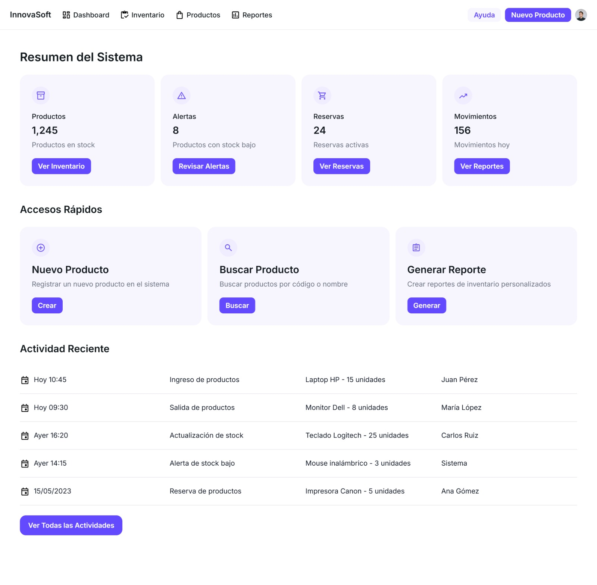

La pantalla principal donde se muestra una visión general del sistema, como los son los sistemas rápidos a funciones clave, las estadísticas resumidas (productos en stock, reservas activas, alertas), y en un menú de navegación intuitivo. 
Regresar